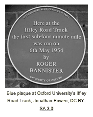

In the 1960s, Dick Fosbury developed a high jump technique that was totally different from the traditional method. He kept refining it, and in the 1968 Olympics, he won the gold medal and set a new record. Now, the Fosbury Flop is the standard technique used by high jumpers worldwide. Dick Fosbury's contribution to high jumping is a vivid example of how an individual can transform an entire sport. Here are some lessons we can learn from him: 1) Experiment - The existing high jump techniques didn't work for Fosbury, so he tried different approaches until he refined his now-famous flop. 2) Challenge the status quo - Fosbury's flop was initially met with ridicule, as is often the case when paradigms are challenged. 3) Go for the gold - Fosbury developed his flop when he was in high school, but he had bigger ambitions and dared to dream big. Questions for Discussion: 1) What's something similar to the Fosbury Flop for your industry/profession? How was it transformational? How did it come about? 2) What areas of your work are you striving to incrementally improve? What would transformative change look like instead? 3) If, like Dick Fosbury, you had something named after you, what would you want it to be? What's needed to bring about a major transformation in your work? Resources: Transformation Our Value: Transformation Transform yourself and help the company and others to do the same. Develop the visions, strategies, capabilities, products and services that will enable us to satisfy unmet needs and create superior value. What is Transformation? Transformation doesn't mean doing what we've been doing a little better or faster. It means doing things in entirely new ways, such as: creating new and better products and services, using new technology, combining existing methods and technologies in new ways, significantly reducing the resources consumed and eliminating unprofitable activities. Why is this important? Transformation is one of Our Values because if we do not continually transform, we will become obsolete and fail. No matter how well we (as a company or individuals) are performing today, we must transform at a greater rate than current and future competitors. This is only possible in an entrepreneurial culture where employees drive transformation from the bottom up rather than waiting for a top-down grand plan. Principles in Brief: Transformation Not only is our world rapidly changing, the rate of change is accelerating. We have long emphasized the importance of continuous improvement; however, today we need more than that. We need continual transformation which requires a heightened sense of urgency. If we do not continually transform, creative destruction and entropy will overwhelm us, and we will fail. Transformation doesn’t mean doing what we’ve been doing a little better or a little faster. It means doing things in entirely new ways, such as: creating new and better products and services, using new technology, combining existing methods and technologies in new ways, significantly reducing the resources consumed and eliminating unprofitable activities. None of these happen without employees who are contribution motivated. For every innovation there is an innovator – and likely many contributors. For every improvement there are employees with the initiative, ideas and skills to make it happen. Transformation also requires building knowledge networks to inform us of methods, technologies and trends from anywhere in the world that might improve, disrupt or destroy what we do today. These knowledge-sharing networks, both internal and external, along with reality-based measures and well-designed experiments, are critical to achieving the necessary rate of transformation. If we are protectionist and close ourselves off from competition or innovation we will become obsolete. Transformations only come about if we transform ourselves. This starts with a willingness to undergo the most difficult and painful of all changes: changing our paradigms. Developing new paradigms and habits based on principles of human progress involves focused and prolonged effort. Consider what’s required for a bodybuilder to transform into a marathon runner. Long-term success also entails continually seeking help to acquire new knowledge and skills. Being a lifelong learner is essential. Our organization is transformed when we continually develop and update its vision, strategies, capabilities, products and services to create superior value and satisfy unmet needs. This is only possible in an entrepreneurial culture where employees are eager and willing to drive transformation from the bottom up rather than waiting for a top-down grand plan. While some transformations are big leaps forward, many are the cumulative result of employees continually challenging and pushing themselves and their teams to find new ways to create value. Organization’s transformations have always depended on employees who are contribution motivated – who know that no matter how well we (as a company or individuals) are performing today, we can always do better. If we dedicate ourselves to understanding and applying the principles of human progress to continually transform ourselves and our organizations, we can accomplish more and have better lives than we ever imagined. Examples Transform Yourself 1) Barry has been a welder for 25 years. A few years ago, he learned how to weld using robot-assisted technology. Now he is learning to program these robots. Barry hopes that one day welders won't ever need to work in dangerous environments. 2) Ren's team is not getting the results they would like. After talking to a mentor and her supervisor, Ren realizes she overly relies on rules and processes to lead her team. With their help, she works hard to change her leadership paradigm. She strives to lead with principles and especially focuses on how she provides feedback to her team. Instead of providing detailed instructions, she discusses goals, gives them principles to consider and asks them for their ideas. Help Others Transform 1) As Barry has been learning more about robotic welding, he's also learned how people can work with other computer-assisted technologies. When Louanne tells him about a new quality testing technology, he brings along other team members to help them learn as they explore its possibilties. 2) As Ren focuses on providing quality feedback, she identifies nowledge gaps of each team member. Some are so used to taking directives that they are uncomfortable using judgment. Ren is now elping tem develop knowledge and critical thinking skills so they can apply principles to make decisions. Over time, Ren notices the team is getting better results and is encouraged by their development. Help the Company Transform 1) Barry continues to work with his supervisor and others to determine if they can use robot-assisted or drone technology for machine inspections. They are striving to make inspections safer with minimal interruptions to production. 2) Ren's team is performing much better. As they have embraced the principles of mutual benefit and Principled Entrepreneurship, hey have developed new ways to meet their objectives - including a transformative way to process customer orders. It's been a win for Ren, her team members, customers, and the company. |
| The 2004 USA Olympic Men's Basketball team learned the hard way that a group of individual superstars does not necessarily make a winning team. Team USA was heavily favored to win the Gold Medal since it included the top NBA players and had earned Gold in every Olympics since 1992. To the surprise of many, Argentina earned Gold and USA took home the Bronze Medal. Why did they fall short of expectations? While there were many contributing factors, here are a few that are often cited: 1) Overconfidence (perhaps even arrogance) - the players were talented superstarts who downplayed the discipline and effort required to work together and win. 2) Complancency due to past sucess 3) Underestimating others - they failed to recognize the rest of the world had caught up with - and even surpassed - them in terms of talent, skills, strategy and teamwork You may have noticed that all these reflect an absence of humility, which is why Humility is one of Our Values. The experience in 2004 led to a reality check for USA Men's Basketball. They learned from their mistakes and used that understanding to transform their approach which led to a Gold Medal in the 2008 Olympics. Questions for Reflection and Discussion: 1) Are there any areas where I and/or my workgroup have gotten very comfortable or even a bit arrogant? What might I/we be missing because of this? 2) When have I seen arrogance (or lack of humility) destroy value? 3) Who can I ask for feedback about how consistent I am with Our Value: Humility? 4) Does my team act like talented individuals doing their own thing or talented individuals who accomplish more as a team than they would separately? Resources: Humility Our Value: Humility Be humble, intellectually honest and deal with reality constructively. Develop an accurate sense of self-worth based on your strengths, limitations and contributions. Hold yourself and others accountable to these standards. What is Humiltiy? Humility is the absence of arrogance, not the denial strength or intelligencce. To be humble is to understand and accept yourself as you really are and accept others as they really are. Having an accurate sense of self-worth begins by believing you have inherent value as a person - which has nothing to do with title, status or money. Why is this important? Arrogance has led to the downfall of many once-successful societies, organizations and individuals. This is why we all need to exemplify humility and intellectual honesty as vital attributes of our culture. To create value for others and achieve personal improvement, each of us must constantly seek to understand and constructively deal with reality. Admitting when you need help, can't do something well, or need to improve is liberating. It frees you to focus on how you can best contribute and allows others to do the same. Principles in Brief: Humility Arrogance – an exaggerated sense of your own importance or belief you are better than others – is the enemy of humility. It is a highly destructive trait for individuals and organizations. It blinds people to their limitations and biases them against the contributions of others. Lack of humility is so destructive that Pope Gregory listed pride as one of the Seven Deadly Sins more than 1400 years ago. Arrogance has led to the downfall of many once-successful societies, organizations and individuals. Humility is the absence of arrogance, not the denial of strength or intelligence. To be humble is to understand and accept yourself as you really are and accept others as they really are. Having an accurate sense of self-worth begins by believing you have inherent value as a person – which has nothing to do with title, status or money – and then discovering your talents and developing them into valued skills. Admitting when you need help, can’t do something well or need to improve is liberating. It frees you to focus on how you can best contribute and allows others to do the same. Intellectual honesty is closely related to humility. It is dedication to truth and constructively dealing with reality, even when it is painful. Instead of only looking for evidence to support our ideas and views, it is to sincerely seek constructive feedback and strive to see things as they really are, rather than how we wish them to be. This is difficult because even when we ask for criticism, we often want praise. We constructively deal with reality by stopping unprofitable endeavors, being realistic about threats that could harm our business and experimenting to create better results. People who are intellectually honest change their paradigms when those paradigms are holding them back. Maintaining humility when you’ve been successful is especially challenging. The minute we believe our success is inevitable or feel we are entitled to our success, we’re in serious trouble. True humility is reflected in our willingness to hold ourselves and others accountable for results and behavior consistent with Our Values. We should have high expectations of ourselves and others, willingly admit our mistakes, make corrections when we fall short of these standards and give credit where credit is due. Examples Receiving Constructive Feedback Demonstrating Humility: Gia was given feedback that she doesn't seem to be trying to udnerstand customer expectations and the department's processses. Instead she is recreating processes from her previous company. Gia was stunned by the feedback, but after thinking about it, she schedules time with her supervisor and says, "I want to understand more about your feedback. I was simply tring to get off to a good start in this new job, but it's clear I need to do something differently." Lacking Humility (Defensiveness): Gia was given feedback that she doesn't seem to be trying to understand customer expectations and the department's processes. Instead, she is recreating processes from her previous company. Gia was stunned by the feedback and immediately responds by saying, "I guess you don't understand that in my previous company we had worldclass processes and that's what this team needs! I'm sure that's why I was hired." Receiving Positive Feedback Demonstrating Humility: Eric's supervisor invites him to join the safety committee because he provides valuable comments during shift meetings. Eric responds, "Can you help me understand which of my comments were most helpful and why? That way I can be as helpful as possible to the safety committee." Lacking Humility (False Modesty): Eric's supervisor invites him to join the safety committee because he provides valuable comments during shift meetings. Eric responds, "Thanks, but I don't have anything better to offer than anyone else on the team." Struggling to Get Work Done Demonstrating Humility: Claire just became responsible for coordinating a big recruiting event. There are many different tasks to be done, some of which she is good at doing and some she is not. Attention to detail is not a strength of Claire's, so she talks to her supervisor about delegating registration tracking to Ryka. Lacking Humility (Foolish Pride): Claire just became responsible for coordinating a big recruiting event. There are many different tasks to be done, some of which she is good at doing and some she is not. She doesn't want to admit that she is in over her head, so she works late every night this month to get everthing done herself. Division of Labor by Comparative Advantage What is Division of Labor by Comparative Advantage? This is a principle that helps us decide who should be working on what. Determinng this may seem straightforward, but it's not. That's because it's simply not identifying what you do better than everyone else. you have a comparative advantage within a group when you work on the things that allow the team as a whole to create the greatest value. Why is this important? Because we work in teams! We can organize people and work in many different ways. Division of Labor by Comparative Advantage prompts us to do this in a way that maximizes overall results. Applying this principle helps: 1) Supervisors work with their employees to maximize what the team can accomplish, such that 1 + 1 + 1 > 3 2) Each team member pursue work they are good at, care about and maximizes their contribution relative to others 3) Employees think more broadly about how they might contribute across organization (including taking on new roles) Principle in Brief: Division of Labor by Comparative Advantage A fundamental principle of human progress is the division of labor by comparative advantage and the resulting increase in cooperation. Specialization by comparative advantage with voluntary exchange and teamwork is much more effective at satisfying people's needs than any other form of organization. Employees have a comparative advantage in a group when they can perform an activity at a lower opportunity cost than others. For example, selling is typically a comparative advantage of successful salespeople, even though they may also be very good at sales analysis. This gives sales analysts a comparative advantage at doing analysis, even when they are not as proficient at it as outstanding salespeople. Employees and groups who take account of their comparative advantages (not just competitive advantages) contribute more, thus are more successful. In staffing, this principle calls for each of our organizations to begin with a clear vision of what capabilities are needed for making the greatest contribution. Contribution-motivated individuals with the optimal diversity of talents and interests can then be selected to build the needed capabilities. Roles and responsibilities are designed not only to fit each employee’s talents and interests but in relation to the roles and abilities of other employees in a way that optimizes the group’s overall performance. This is accomplished through an ongoing dialogue between employees and supervisors with assistance from others. It includes supervisors giving employees frequent, honest feedback to help them understand their performance and how to increase their contribution. It is also essential that supervisors solicit feedback from employees regarding what would enable the employee, the supervisor and the group to improve. Because conditions and people are always changing, roles and responsibilities need to be continually reassessed to maximize each individual’s contribution and the organization’s overall performance. When an employee leaves, is added, or changes roles, responsibilities throughout must be re-evaluated. One way everyone can contribute is by identifying potential employees who would strengthen their team and other parts of organization. A beneficial division of labor by comparative advantage requires a diversity of employees who are contribution motivated and have a variety of aptitudes or skills that will increase our ability to profitably expand our current businesses, solve existing or anticipated problems, or capture new opportunities. Examples Same as strengths? Myth: Your comparative advantage is your greatest strength. Truth: Your comparative advantage is what you can do to maximize the TEAM's result. Division of labor by comparative advantage cannot be applied to an individual by only considering that individual. It helps maximize the value the team can create by COMPARING different alternatives for who could be working on what. Can it change? Myth: A person's comparative advantage is fixed. Truth: A person's comparative advantage can (and does) change - and sometimes dramatically. A person's comparative advantage often changes when the team changes in some way or business conditions and opportunities change. |
| Although Roger Bannister never won an Olympic medal, his name is synonymous with breaking paradigms that limit athletic performance. Changing a paradigm often starts when someone realizes they aren't getting the results they expected. When Roger Bannister represented Great Britain in the 1952 Helsinki Olympics, he was favored to win the 1500-meter event but finished fourth. It's reported that this disappointment strengthened his determination to be the first person to run a mile in under four minutes.  Bannister achieved that goal two years later, in 1954, when he ran a mile in 3 minutes and 59.4 seconds. Before this accomplishment, people believed it was physically impossible for a human being to run a mile in less than four minutes. Bannister shattered this belief and introduced a new paradigm. Within a year, several people broke the four-minute-mile barrier. Decades later, Bannister's accomplishment continue to influence the mindset and training of athletes and inspire them to continually push their limits. Questions for Discussion: 1) Think about the last several months. Did you or your team talk about something being impossible? Revisit the topic - is it really impossible or do you have a limiting paradigm? 2) Is there an area where you or your team is underperforming? What paradigms do you have that might be holding you back? Resources: Changing Paradigms What is Changing Paradigms? A paradigm is the shared set of assumptions, theories and methods that guides the work of individuals and groups. Paradigms help us make sense of the world. They shape our approach to problem-solving, innovation, and the pursuit of knowledge. They beome our "truth" - even when flawed or untrue. Why is this important? This principle is called "changing paradigms" to remind us that we must be diligent to understand our paradigms and change them when they are flawed or become ineffective. We must continually challenge our paradigms to ensure they are not blinding us to a better way, but instead are enabling us to see. It's important to remain open and adaptable to ensure that our paradigms help us achieve superior results. Principles in Brief Changing Paradigms: A paradigm is the shared set of assumptions, theories and methods that guides the work of individuals and groups. All of us have them. Paradigms help us make sense of the world. They shape our approach to problem-solving, innovation and the pursuit of knowledge. They become our “truth” – even when flawed or untrue. A flat earth, witch burning and lobotomies used to be generally accepted paradigms. Thankfully, our understanding has improved and most of our paradigms are better. Thomas Kuhn, philosopher of science, noted that when most people are faced with a new paradigm, they tend to ignore, deny or even attack the new way of thinking rather than giving it a chance. This is especially true for those who don’t know how to change or have a vested interest – such as a career or reputation built on the current paradigm. Attacks on those advocating a new paradigm by those wedded to the existing paradigm have always been common. The 17th-century church imprisoned Galileo for suggesting the earth orbited the sun. For decades, 19th-century doctors rejected the new paradigm of germ theory because it implicated their dirty hands as a source of disease transmission and high mortality rates. When Einstein introduced the theory of relativity, it was attacked by the scientific community. Einstein welcomed the criticism and even insisted that his theory pass three tests to be considered valid. A longstanding paradigm in business is the belief that a top-down approach is best, with leaders dictating how everything should be done. In the early 1990s, when we introduced MBM® to our metal fabrication plant in Italy, the response of the union leaders was: “This might work in the US, but it won’t work in Italy. Here, managers think. Workers work. You’re asking us to do the manager’s job.” Applying MBM there required a paradigm shift. Following are additional examples of business-related paradigms that are inconsistent with Principle Based Management: 1) Forcing employees into roles they aren’t good at or don’t care about rather than fitting the role to the comparative advantage of each 2) Defending rather than challenging the status quo 3) Using averages to make decisions rather than applying marginal analysis 4) Hiring based on credentials rather than virtue and talents 5) Increasing revenue that is unprofitable Changing paradigms begins by recognizing that something is amiss, such as not getting the results we expected. Our initial reaction tends to be only giving lip service to the needed paradigm shift, to changing the form but not the substance. Thus, it often takes outside intervention to bring about real change, which can mean removing those, including leaders, who are holding back progress. Understanding the power of paradigms can help us recognize what is hurting results and accelerate the needed transformation. It can open our minds and lead us to recognize the need to always seek better ways of thinking and doing. This requires that we continually challenge our paradigms to ensure that, rather than blinding us to a better way, they enable us to see. Openness: Openness is a simple concept reliant on a system of equal rights that respects the dignity of each person and their right to live as they choose – as long as they do not violate the rights of others. When people are respected, free to choose their own path, and rewarded for the value of their work, they can improve their own circumstances as they contribute to the well-being of others. An open society encourages honest exchanges of knowledge, opinions and ideas while protecting individuals from the threats or force of those who disagree. Unfortunately, today’s trend is against openness. Differences have become dividing lines, with those who disagree demonized or canceled. More broadly, nationalism and tribalism pit one group against another. Closed-minded people retreat into insular and protectionist groups, reinforcing their own biases and preventing the exploration of different perspectives through civil discourse. The ancient philosopher Confucius taught that it is “a pleasure to learn,” and that even in a group as small as three, there will always be one from whom we can learn. By embracing openness, we accelerate our rate of learning and improve relationships. Differences become opportunities for productive discussions even in the face of passionate disagreement. Openness should extend to all interactions with others, including trade. Voluntary exchange – based on mutual benefit – fosters division of labor by comparative advantage and entrepreneurship that lead to a greater diversity of art, music, food and other goods and services that enrich people’s lives. Protectionist barriers to exchange, whether within or among nations, create closed systems that stifle innovation and value creation. As Frederic Bastiat observed: “When goods don’t cross borders, soldiers will.” At organization, we recognize the vital role of openness in bringing about progress. Innovation flourishes when we encourage the free flow of ideas, well-designed experiments, challenge and building knowledge networks. Employees learn more and make better decisions when they seek out diverse points of view and are open to feedback about how they can improve. They help others do the same when they share their ideas and suggest different approaches. If we are open, we recognize that no matter how well we have been doing, we can always do better. Openness helps us overcome entropy in society, our organizations and our lives. Examples Identifying the Flawed Paradigm 1) Ricki, a salesperson, is surprised when her supervisor tells her that despite increased sales volume last month, many of Ricki's sales weren't profitable. "Ricki realizes she is falling into the trap of focusing on revenue. In turn, she sometimes agrees to terms that are good for customers, but not the company." 2) Stan is the supervisor of an operating unit. Facility engineers tell Stan that if his team identified minor issues sooner, the big issues coulbe be avoided. After talking to his team, Stan realizes they (himself included) have a "chain of command" or "top down" paradigm, which causes the operators to wait on Stan for direction or approval on everything. Making Real Changes 1) For the next month, Ricki works closely with her supervisor on each new customer deal. Ricki makes the initial recommendations with mutual benefit in mind and together they evaluate each deal and discuss adjustments and long-term strategies for each customer. Ricki's recommendations keep improving. 2) After talking to his supervisor, a few engineers and his employees, Stan defines and communicates a new paradigm for his team. He coaches his team regularly so they become empowered to proactively identify problems, resolve problems themselves when it's appropriate, seek help from others when they need it, and use Stan as a partner rather than an approver. Receiving Ongoing Help 1) After a few months, Ricki no longer needs help with every transaction. Now her supervisor provides ongoing coaching to help Ricki go beyond profitable transactions to develop mutually beneficial, long-term relationships. 2) Stan seeks feedback from his supervisor and team members to understand how his behavior is affecting their progress. While Stan doesn't always get it right, his team is being more proactive and treating Stan like a partner. |
| Olympic athletes come in many shapes and sizes - as different people are suited to different sports. Athletes with exceptional speed, agility and coordination often excel in sports like sprinting, gymnastics and swimming. Endurance and stamina are vital for distance runners, distance swimmers and cyclists. Strength and power are essential for weightlifting, shot put, discus, and hammer throw. There are many lessons from Olympic athletes that match up nicely with some PBM principles - especially Contribution Motivated. Here are a few attributes we see in people who are contribution motivated: 1) Having grit, resilience and a can-do attitude. It doesn't matter how talented someone is, hard work and the right attitude are necessary to develop that gift and realize their potential. 2) Demonstrating courage in learning their talents and what they are passionate about. 3) Focusing on results and constantly striving to get better, evne when they're doing well. 4) Seeking coaching and support to realize their potential. In short, it'a combination of the right virtue and talents that is essential for success! Resources Motivations and Behaviors What is Contribution Motivated? When you are contribution motivated, you seek to discover, develop and utilize you abilities to succeed by helping others improve their lives. You are energized by creatively getting results which enables you to live a life of meaning. Motivations and Behaviors for Individual and Organizational Success is a key resource that contrasts contribution motivated with deficiency motivated. Why is this important? To be successful, we need employees who are motivated to maximize their contribution to organization's long-term success, exemplify Our values and have abilities that are additive to the team. We strive to hire and retain people who are contribtution motivated first and foremost - and reinforce that motivaton through individualized roles and responsibilities, coaching, development, and rewards. Motivations and Behaviors For Individual and Organizational Success To be successful long term, we need employees who are motivated to maximize their contribution to the long-term success of organizationconsistent with Principle Based Management and have the ability to help the team succeed. Rather than perfection, we expect employees to be predominantly contribution motivated rather than deficiency motivated. Principle in Brief: Contribution Motivated Personal success and fulfillment – in any field or endeavor – come from helping others in ways that are mutually beneficial. Alexis de Tocqueville called this acting out of an “enlightened regard for [oneself],” which “constantly prompts [people] to assist one another.” This principle of being contribution motivated has been vital to organization’s success. From Abraham Maslow it has become generally accepted that most individuals must first satisfy their basic physical needs and then their communal needs, as well as achieve a sense of self-worth. Individuals for whom any of these needs are seriously unfulfilled tend to be driven by them, which he called being deficiency motivated. In this state, people often act in unhelpful or even counterproductive ways, such as being defensive, resisting feedback, hoarding knowledge, undermining colleagues and complaining without offering solutions. Being contribution motivated enables people to discover, develop and utilize their abilities to succeed by helping others. They are energized by continuously trying to improve, innovate, transform and creatively get results – which enables them to live lives of meaning. The more people contribute, the better they feel about themselves and the more they tend to be rewarded, so the more they want to contribute. As difficult as it is for individuals to contribute when deficiency motivated, it is almost impossible when negatively or destructively motivated. They can be driven by tribalism; narcissism; the will to power; jealousy; a lack of integrity, humility, or respect for others; or the desire for vengeance for real or imaginary injustices. Organizations with a culture of negative motivation typically have no purpose other than advancing their own power or profiting by any means. This is why we prioritize a contribution-motivated culture – one based on Our Values. It involves hiring and retaining people who are first and foremost contribution motivated, and reinforcing that motivation through individualized roles and responsibilities, coaching, development and rewards. Examples Hiring Contribution Motivated: During an interview, Ginny showed self-awareness. She described what she learned about herself in each job. Ginny admitted that she gets bored easily and often moves on once she's mastered something. She said she feels most energized when she can help her teammates and see the effect of their work. Deficiency Motivated: During an interview, Jorge showed he lack self-awareness. He artfully talked about how managers in his previous jobs made it difficult for him. When asked about feedback he received, Jorge discounted his performance reviews and clearly believed his previous supervisors undervalued his abilities and achievements. Day-to-Day Work Contribution Motivated: Lee is an environmental engineer whose team recently finished a large project updating the facility's watershed and irrigation equipment. Lee proactively talks to his supervisor to discuss other ways to contribute. In the near term, he uses some of this "downtime" to get current on the newest water quality measures. Deficiency Motivated: Lana is a data analyst who recently finished automating measurement reports. She now has some "free time" while waiting for her supervisor to provide the next assignment. Lana uses the time to get caught up on her personal email and plays on her phone a lot. Talents The most important factor when selecting and retaining employees is whether they have virtue - including being contribution motivated. But it is critical that they also have a talent that will help us succeed long-term. Employees who lack virtue can do far more damage than those who lack the right talent. Both factors are needed for any of us to create value. A person's ability to excel in a given role mostly depends on their aptitudes or intelligences. In psychologist Howard Gardner's multiple intelligences theory, there are a number of independent forms of intelligence and none of us is equally gifted in all of them. When someone is strong in an intelligence, such as logical-mathematical or interpersonal, they have the capacity to excel at activities requiring that intelligence. Whether or not Gardner is correct about the number or kinds of intelligences, it is clear tha major differences exist among individuals and the roles they can perform well. Talent alone does not guarantee success. Because the world is rapidly changing, continual learning and development are critical. We must work to develop our gifts into value skills by trying new things to determine what we are - and are not - good at, and seeking feedback from those who will tell us the truth. Becuase many organizations emphasize hierarchy, people often chase promotions or prestigious roles. Instead of fixating on some predetermined career path, we strive to create an environment where employees seek roles where they can maximize their contribution. This leads to greater opportunities and rewards for the employee. We strive to apply the division of labor by comparative advantage instead of forcing employees into one-size-fits-all roles they aren't good at or don't care about. Good supervisors work with their employees to help each develop a role with the responsibilities that will enable them to self-actualize by contributing. An employee's role, responsibilities, and expectations (RREs) describ how they need to utilize their talents to maximize overall results. It is critical that everyone is in a role that fits their talents. If an employee is contribution motivated but not performing well, we probably have them in the wrong role. We need to help them find a more suitable role in their group. This requires that employees be honest with themselves and their supervisors about where their talent will enable them to fully contribute. Good supervisors guide these efforts and remove barriers that prevent employees from realizing their potential. Virtue and Talents Dimension The Virtue and Talents Dimension focuses on the culture and personal attributes necessary for long-term success. Principles in this dimension also help us: 1) Hire and retain contribution motivated people who have a diversity of aptitudes that can help us advance our vision. 2) Support each employee to develop and become more contribution motivated. 3) Continually adjust so teams have the right combination of perspectives, experiences, aptitudes, knowledge and skills to drive profitable transformation. The Virtue and Talents Dimension and You It helps you self-actualize and become more contribution motivated so that you: 1) Contribute to a culture that exemplifies Our Values. 2) Develop your gifts so you can contribute more and have the career you want. 3) Use our principle-based framework to guide your work. |